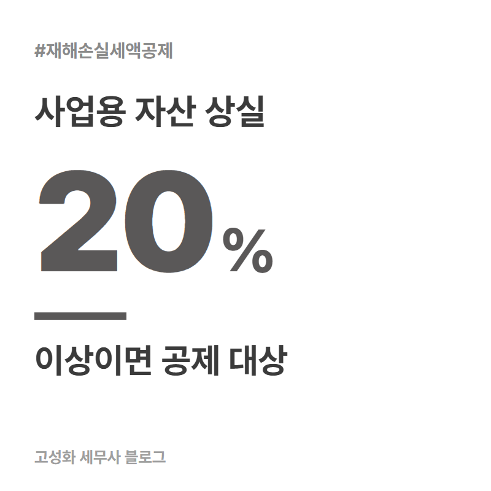
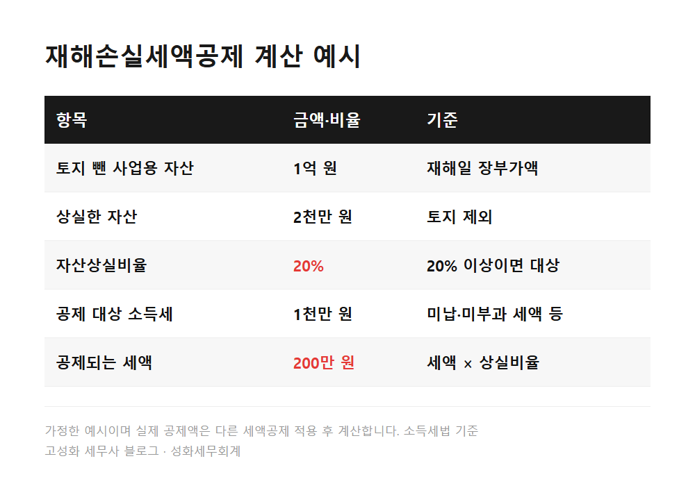
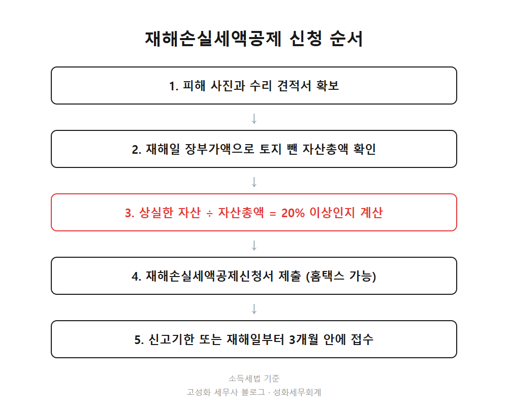
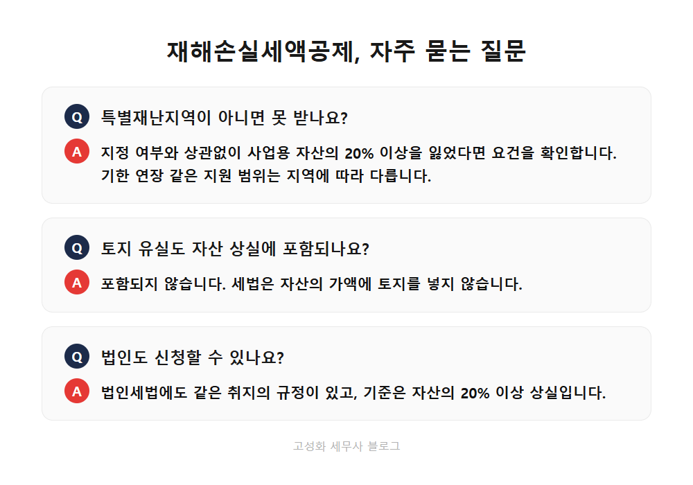

호우 피해 재해손실세액공제 신청, 자산 20% 이상 잃었다면
사무실은 서울 서초구에 있지만 장부를 맡겨주시는 대표님들은 전국에 계십니다. 비가 많이 온 해에는 지방 거래처에서 "가게가 잠겼는데 세금은 어떻게 하죠" 하는 전화가 가장 먼저 옵니다.
피해를 입은 사업자분께 세금 이야기는 가장 마지막에 떠오릅니다. 그래서 놓치기도 쉽습니다.
이번에 전남 영광군 백수읍이 9월 17일 특별재난지역으로 지정됐습니다. 국세청은 이 지역 납세자에게 세정지원을 시작했다고 발표했습니다.
이 글을 보고 계신 분은 아마 ①이번 호우로 사업장이나 설비, 재고를 잃으셨거나, ②특별재난지역은 아닌데 피해가 컸거나, ③주변 사업자분께 알려드릴 내용을 찾고 계실 겁니다. 지원이 어떤 게 있는지, 그리고 세액공제를 어떻게 받는지 순서대로 정리해 드립니다.
- 특별재난지역 지정으로 달라지는 것
- 재해손실세액공제, 자산의 20%가 기준입니다
- 신청은 언제까지 하나
한눈에 보기




자주 묻는 질문
특별재난지역이 아니면 재해손실세액공제를 못 받나요?
받을 수 있습니다. 재해로 토지를 뺀 사업용 자산의 20% 이상을 잃고 납세가 곤란하다고 인정되면 지정 여부와 상관없이 요건을 확인합니다. 다만 신고와 납부 기한 연장 같은 지원은 지역 지정 여부에 따라 범위가 다릅니다.
토지가 침수되거나 유실된 것도 자산 상실에 들어가나요?
들어가지 않습니다. 세법은 자산의 가액에 토지를 포함하지 않는다고 정해 두었습니다.
법인도 신청할 수 있나요?
법인세법에도 같은 취지의 규정이 있고 기준도 자산의 20% 이상 상실입니다. 법인은 법인세에서 공제합니다.
정리하면
호우 피해를 입은 사업자는 신고와 납부 기한 연장, 압류 유예에 더해 사업용 자산의 20% 이상을 잃었다면 재해손실세액공제까지 확인해 보실 수 있습니다. 토지는 빼고 계산하고, 신청은 재해일부터 3개월 또는 신고기한까지입니다.
피해 복구가 먼저인 시기입니다. 자산 상실비율 계산이나 신청서 작성이 막막하시다면 사진과 견적서만 보내 주세요. 나머지는 같이 정리해 드리겠습니다.
본문 전체와 근거 조문은 블로그에서 확인하실 수 있습니다.